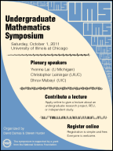

For the latest symposium information see the UMS home page.

| 8:15 - 8:55am | Sign-in and coffee in SEO 300 |
| Morning Session - Plenary lectures, 50 minutes each, in SEO 636 | |
| 8:55am | Opening remarks |
| 9:00am | Yvonne Lai (U Michigan) — Decomposing polyhedra |
| 10:00am | Dhruv Mubayi (UIC) — From Ramsey theory to arithmetic progressions and hypergraphs |
| 11:00am | Christopher Leininger (UIUC) — Geometry and dynamics of surface homeomorphisms |
| 12:00pm | Lunch in SEO 300 |
| Afternoon Session 1 — Student lectures, 20 minutes each, in SEO 636 | |
| 1:30pm | Sean McAfee (UIC) — On improving Cayley's theorem for groups of order p4 |
| 2:00pm | Jonathan Gleason (U Chicago) — The F*-algebraic Formulation of Quantum Mechanics |
| 2:30pm | Christopher Perez (CalTech) — Siegel modular varieties: arithmetic invariants and cusps |
| 3:00pm | Coffee break in SEO 300 |
| Afternoon Session 2 — Student lectures, 20 minutes each, in SEO 636 | |
| 3:30pm | In-Jee Jeong (Brown) — Bipartite Graphs, Quivers, and Cluster Variables |
| 4:00pm | Anita Thomas (IIT) — Sampling Within k-Means Algorithm to Cluster Large Datasets |
| 4:30pm | Jahan Claes (U Chicago) — Spectral Rigidity on Flat Tori |
| 5:00pm | Joshua Jay Herman (UIC) — Introduction to topological quantum computation |